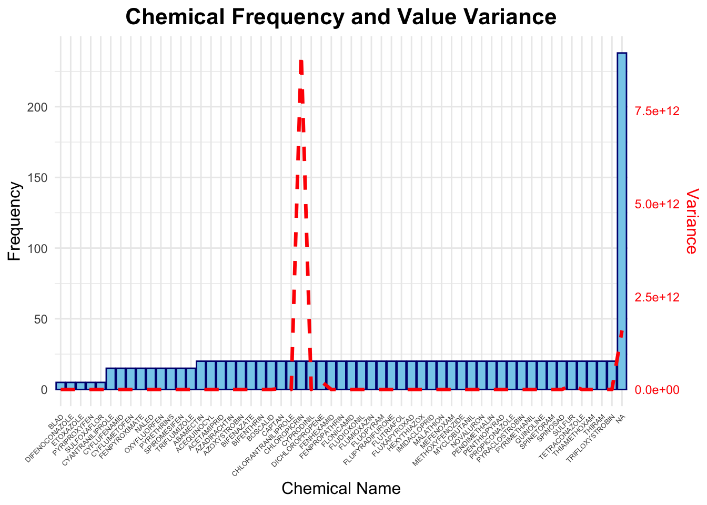
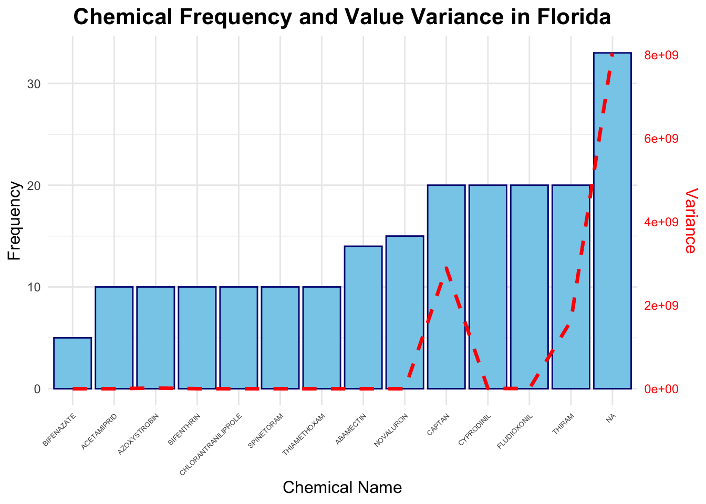
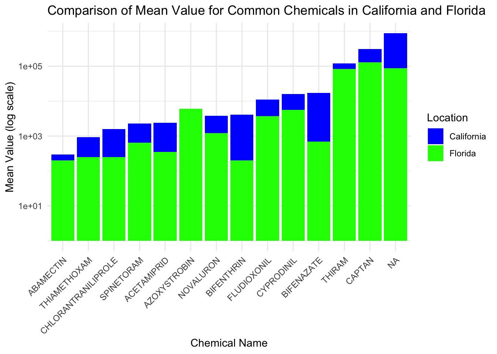
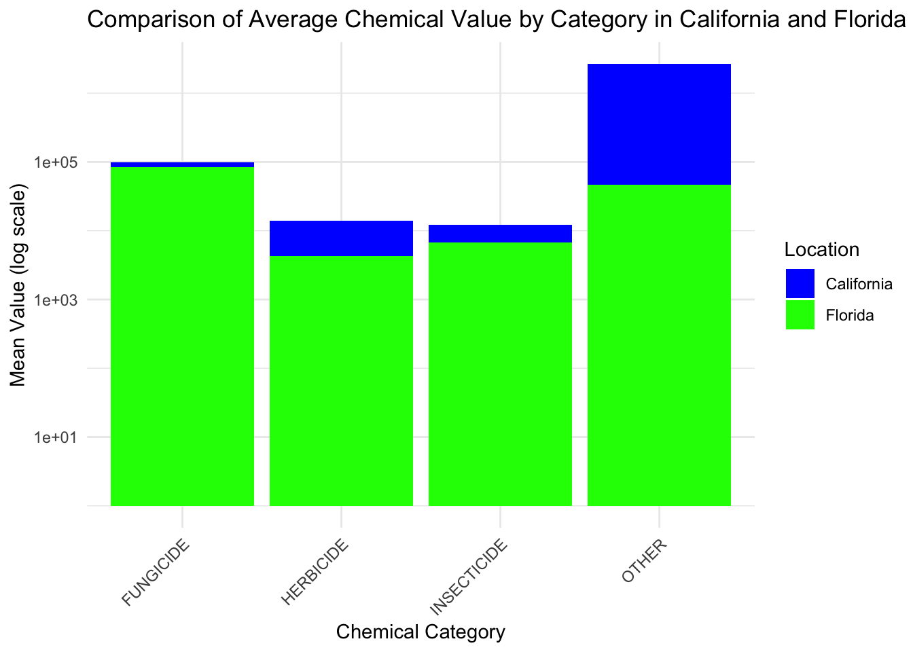
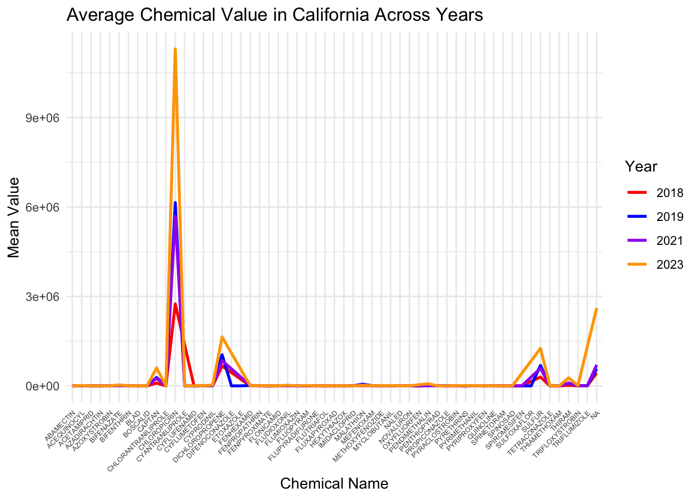
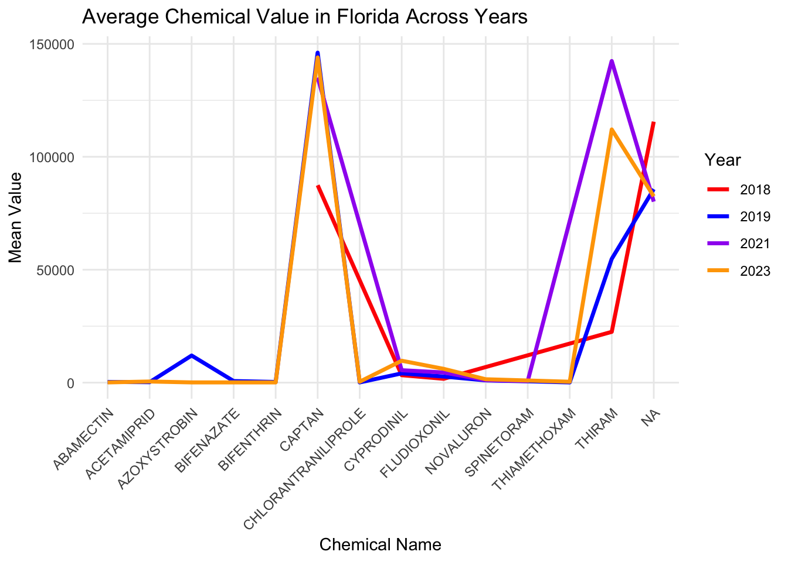

straw_ca <- read.csv("survey_ca_chem.csv")
straw_flo <- read.csv("survey_flo_chem.csv")Strawberry chemicals EDA
#Input cleaned data
After the data cleaning, compare to the data in California which contain 1238 observations, there are only 207 observations in Florida. This unbalanced dataset may be caused by some reasons such as Agricultural Scale Differences, Sampling Differences, and Data Availability or Reporting.
##Descriptive statistics
library(dplyr)
Attaching package: 'dplyr'The following objects are masked from 'package:stats':
filter, lagThe following objects are masked from 'package:base':
intersect, setdiff, setequal, unionstraw_ca_lb <- straw_ca %>%
filter(measure == "MEASURED IN LB") %>%
filter(mkt == "BEARING - APPLICATIONS")
straw_ca_lb %>%
pull(Value) %>%
summary() Min. 1st Qu. Median Mean 3rd Qu. Max.
100 1300 3400 313658 10800 15611900 straw_flo_lb <- straw_flo %>%
filter(measure == "MEASURED IN LB") %>%
filter(mkt == "BEARING - APPLICATIONS")
straw_flo_lb %>%
pull(Value) %>%
summary() Min. 1st Qu. Median Mean 3rd Qu. Max.
100 600 5100 45149 54800 303200 unique(straw_ca_lb$Name) [1] "AZOXYSTROBIN" NA "BOSCALID"
[4] "CAPTAN" "CYPRODINIL" "FENHEXAMID"
[7] "FLUDIOXONIL" "FLUOPYRAM" "FLUXAPYROXAD"
[10] "MEFENOXAM" "MYCLOBUTANIL" "PENTHIOPYRAD"
[13] "PROPICONAZOLE" "PYRACLOSTROBIN" "PYRIMETHANIL"
[16] "QUINOLINE" "SULFUR" "TETRACONAZOLE"
[19] "THIRAM" "TRIFLOXYSTROBIN" "FLUMIOXAZIN"
[22] "PENDIMETHALIN" "ABAMECTIN" "ACEQUINOCYL"
[25] "ACETAMIPRID" "AZADIRACHTIN" "BIFENAZATE"
[28] "BIFENTHRIN" "CHLORANTRANILIPROLE" "CYANTRANILIPROLE"
[31] "CYFLUMETOFEN" "FENPROPATHRIN" "FLONICAMID"
[34] "FLUPYRADIFURONE" "HEXYTHIAZOX" "IMIDACLOPRID"
[37] "MALATHION" "METHOXYFENOZIDE" "NOVALURON"
[40] "SPINETORAM" "SPINOSAD" "THIAMETHOXAM"
[43] "CHLOROPICRIN" "DICHLOROPROPENE" "FLUTRIAFOL"
[46] "CYFLUFENAMID" "TRIFLUMIZOLE" "OXYFLUORFEN"
[49] "FENPYROXIMATE" "NALED" "PYRETHRINS"
[52] "SPIROMESIFEN" "BLAD" "DIFENOCONAZOLE"
[55] "ETOXAZOLE" "PYRIPROXYFEN" "SULFOXAFLOR" unique(straw_flo_lb$Name) [1] "AZOXYSTROBIN" "CAPTAN" "CYPRODINIL"
[4] "FLUDIOXONIL" "THIRAM" NA
[7] "ABAMECTIN" "ACETAMIPRID" "BIFENTHRIN"
[10] "CHLORANTRANILIPROLE" "NOVALURON" "THIAMETHOXAM"
[13] "SPINETORAM" "BIFENAZATE" library(dplyr)
library(knitr)
chemicals_ca <- unique(straw_ca$Name)
chemicals_flo <- unique(straw_flo$Name)
chemicals_only_in_ca <- setdiff(chemicals_ca, chemicals_flo)
chemicals_table <- data.frame(Chemicals_Only_In_CA = chemicals_only_in_ca)
chemicals_table_split <- matrix(chemicals_table$Chemicals_Only_In_CA, ncol = 4, byrow = TRUE)Warning in matrix(chemicals_table$Chemicals_Only_In_CA, ncol = 4, byrow =
TRUE): data length [43] is not a sub-multiple or multiple of the number of rows
[11]kable(chemicals_table_split, col.names = rep("Chemical Name", 4), caption = "Chemicals Found in California but not in Florida")| Chemical Name | Chemical Name | Chemical Name | Chemical Name |
|---|---|---|---|
| BOSCALID | FENHEXAMID | FLUOPYRAM | FLUXAPYROXAD |
| MEFENOXAM | MYCLOBUTANIL | PENTHIOPYRAD | PROPICONAZOLE |
| PYRACLOSTROBIN | PYRIMETHANIL | QUINOLINE | SULFUR |
| TETRACONAZOLE | TRIFLOXYSTROBIN | FLUMIOXAZIN | PENDIMETHALIN |
| ACEQUINOCYL | AZADIRACHTIN | CYANTRANILIPROLE | CYFLUMETOFEN |
| FENPROPATHRIN | FLONICAMID | FLUPYRADIFURONE | HEXYTHIAZOX |
| IMIDACLOPRID | MALATHION | METHOXYFENOZIDE | SPINOSAD |
| CHLOROPICRIN | DICHLOROPROPENE | FLUTRIAFOL | CYFLUFENAMID |
| TRIFLUMIZOLE | OXYFLUORFEN | FENPYROXIMATE | NALED |
| PYRETHRINS | SPIROMESIFEN | BLAD | DIFENOCONAZOLE |
| ETOXAZOLE | PYRIPROXYFEN | SULFOXAFLOR | BOSCALID |
chemicals_ca_lb <- unique(straw_ca_lb$Name)
chemicals_flo_lb <- unique(straw_flo_lb$Name)
common_chemicals <- intersect(chemicals_ca_lb, chemicals_flo_lb)
common_chemicals_table <- data.frame(Common_Chemicals = common_chemicals)
kable(common_chemicals_table,
caption = "Common Chemicals in California and Florida (LB)")| Common_Chemicals |
|---|
| AZOXYSTROBIN |
| NA |
| CAPTAN |
| CYPRODINIL |
| FLUDIOXONIL |
| THIRAM |
| ABAMECTIN |
| ACETAMIPRID |
| BIFENAZATE |
| BIFENTHRIN |
| CHLORANTRANILIPROLE |
| NOVALURON |
| SPINETORAM |
| THIAMETHOXAM |
In this report, we focus on the BEARING - APPLICATIONS group, since it contain larger data. It is obvious that the weight usage of chemicals in pounds (LB) differs between the two states. In total, the average of chemicals weight measured in lb in California (313,658) is larger than that in Florida(45,149). In addition, there are 57 kinds of chemicals are used in California, but only 14 kinds in Florida. ##Distribution of chemicals
library(dplyr)
library(ggplot2)
chemical_summary <- straw_ca %>%
group_by(Name) %>%
summarise(
Frequency = n(),
Variance = var(Value)
)
max_frequency <- max(chemical_summary$Frequency)
max_variance <- max(chemical_summary$Variance)
ggplot(chemical_summary, aes(x = reorder(Name, Frequency), y = Frequency)) +
geom_bar(stat = "identity", fill = "skyblue", color = "navy") +
geom_line(aes(y = Variance * max_frequency / max_variance),
color = "red", linetype = "dashed", group = 1, linewidth = 1.2) +
labs(
title = "Chemical Frequency and Value Variance",
x = "Chemical Name",
y = "Frequency"
) +
scale_y_continuous(
sec.axis = sec_axis(~ . * max_variance / max_frequency, name = "Variance")
) +
theme_minimal() +
theme(
axis.text.x = element_text(angle = 45, hjust = 1, size = 5),
axis.title.y = element_text(size = 12),
axis.title.x = element_text(size = 12),
plot.title = element_text(hjust = 0.5, size = 16, face = "bold"),
axis.text.y.right = element_text(color = "red"),
axis.title.y.right = element_text(color = "red", size = 12)
)
This graph represents how often each chemical used in California and the variance (red dashed line, right Y-axis) of the Value in pounds of usage, indicates how much the recorded values for each chemical fluctuate. The chemicals in the middle appear consistently across records but with lower frequencies. However there are 238 observations without chemical names. The chemical named CHLOROPICRIN has the biggest variance.
library(dplyr)
library(ggplot2)
chemical_summary_flo <- straw_flo %>%
group_by(Name) %>%
summarise(
Frequency = n(),
Variance = var(Value)
)
max_frequency_flo <- max(chemical_summary_flo$Frequency)
max_variance_flo <- max(chemical_summary_flo$Variance)
ggplot(chemical_summary_flo, aes(x = reorder(Name, Frequency), y = Frequency)) +
geom_bar(stat = "identity", fill = "skyblue", color = "navy") +
geom_line(aes(y = Variance * max_frequency_flo / max_variance_flo),
color = "red", linetype = "dashed", group = 1, linewidth = 1.2) +
labs(
title = "Chemical Frequency and Value Variance in Florida",
x = "Chemical Name",
y = "Frequency"
) +
scale_y_continuous(
sec.axis = sec_axis(~ . * max_variance_flo / max_frequency_flo, name = "Variance")
) +
theme_minimal() +
theme(
axis.text.x = element_text(angle = 45, hjust = 1, size = 5),
axis.title.y = element_text(size = 12),
axis.title.x = element_text(size = 12),
plot.title = element_text(hjust = 0.5, size = 16, face = "bold"),
axis.text.y.right = element_text(color = "red"),
axis.title.y.right = element_text(color = "red", size = 12)
)
Similarly, here is the distribution of chemical usage in Florida. The BIFENAZATE is the least popular one used here, and as still most of chemicals are used without specific name.
library(dplyr)
library(ggplot2)
common_chemicals <- intersect(chemicals_ca_lb, chemicals_flo_lb)
straw_ca_common <- straw_ca_lb %>%
filter(Name %in% common_chemicals)
straw_flo_common <- straw_flo_lb %>%
filter(Name %in% common_chemicals)
ca_mean_values <- straw_ca_common %>%
group_by(Name) %>%
summarise(Mean_Value_CA = mean(Value))
flo_mean_values <- straw_flo_common %>%
group_by(Name) %>%
summarise(Mean_Value_FLO = mean(Value))
mean_values_comparison <- merge(ca_mean_values, flo_mean_values, by = "Name")
ggplot(mean_values_comparison, aes(x = reorder(Name, Mean_Value_CA))) +
geom_bar(aes(y = Mean_Value_CA, fill = "California"), stat = "identity", position = "dodge") +
geom_bar(aes(y = Mean_Value_FLO, fill = "Florida"), stat = "identity", position = "dodge") +
labs(
title = "Comparison of Mean Value for Common Chemicals in California and Florida",
x = "Chemical Name",
y = "Mean Value (log scale)"
) +
scale_y_log10() +
theme_minimal() +
theme(axis.text.x = element_text(angle = 45, hjust = 1)) +
scale_fill_manual(name = "Location", values = c("California" = "blue", "Florida" = "green"))
For the chemicals in common in two places, there is a graph about the comparison of their average usage in pounds (scaled by log). It shows that although there are more types of chemicals used in California, the usage in Florida is larger than that of California.
library(dplyr)
library(ggplot2)
ca_category_value <- straw_ca_lb %>%
group_by(col2) %>%
summarise(Mean_Value_CA = mean(Value, na.rm = TRUE))
flo_category_value <- straw_flo_lb %>%
group_by(col2) %>%
summarise(Mean_Value_FLO = mean(Value, na.rm = TRUE))
category_value_comparison <- merge(ca_category_value, flo_category_value, by = "col2", all = TRUE)
ggplot(category_value_comparison, aes(x = col2)) +
geom_bar(aes(y = Mean_Value_CA, fill = "California"), stat = "identity", position = "dodge") +
geom_bar(aes(y = Mean_Value_FLO, fill = "Florida"), stat = "identity", position = "dodge") +
labs(
title = "Comparison of Average Chemical Value by Category in California and Florida (Log Scale)",
x = "Chemical Category",
y = "Mean Value (log scale)"
) +
scale_y_log10() +
theme_minimal() +
theme(axis.text.x = element_text(angle = 45, hjust = 1)) +
scale_fill_manual(name = "Location", values = c("California" = "blue", "Florida" = "green"))
This bar chart compares the mean chemical values for different chemical types between California and Florida. The Y-axis represents the mean values on a logarithmic scale. In California, the mean value for fungicides is higher than in Florida. The difference between the two regions is small, but the logarithmic scale reveals that California has a slightly higher average fungicide usage than Florida. California appears to rely more heavily on chemicals classified as “OTHER” compared to Florida, which could indicate a different approach to managing crops or different environmental or regulatory needs. The relatively similar usage of fungicides and insecticides between the two states suggests some shared agricultural practices or similar pest management strategies.
library(dplyr)
library(ggplot2)
ca_yearly_avg <- straw_ca_lb %>%
group_by(Name, Year) %>%
summarise(Mean_Value_CA = mean(Value))`summarise()` has grouped output by 'Name'. You can override using the
`.groups` argument.flo_yearly_avg <- straw_flo_lb %>%
group_by(Name, Year) %>%
summarise(Mean_Value_FLO = mean(Value))`summarise()` has grouped output by 'Name'. You can override using the
`.groups` argument.ggplot(ca_yearly_avg, aes(x = Name, y = Mean_Value_CA, group = Year, color = as.factor(Year))) +
geom_line(size = 1.0) +
labs(
title = "Average Chemical Value in California Across Years",
x = "Chemical Name",
y = "Mean Value"
) +
scale_color_manual(
name = "Year",
values = c("2018" = "red", "2019" = "blue", "2020" = "green", "2021" = "purple", "2023" = "orange")
) +
theme_minimal() +
theme(axis.text.x = element_text(angle = 45, hjust = 1, size = 5))Warning: Using `size` aesthetic for lines was deprecated in ggplot2 3.4.0.
ℹ Please use `linewidth` instead.
ggplot(flo_yearly_avg, aes(x = Name, y = Mean_Value_FLO, group = Year, color = as.factor(Year))) +
geom_line(size = 1.2) +
labs(
title = "Average Chemical Value in Florida Across Years",
x = "Chemical Name",
y = "Mean Value"
) +
scale_color_manual(
name = "Year",
values = c("2018" = "red", "2019" = "blue", "2020" = "green", "2021" = "purple", "2023" = "orange")
) +
theme_minimal() +
theme(axis.text.x = element_text(angle = 45, hjust = 1))
These two graphs illustrate the average chemical values across different years (2018, 2019, 2021, and 2023) for various chemical names used in California and Florida. Both graphs provide insights into the changes in chemical usage over time in each state. For the graph of California, there is a significant spike in the average value in 2023 for some chemicals, particularly for chemicals labeled as “NA.” This spike is much higher compared to other chemicals in the previous years. For most chemicals, the values in 2018, 2019, and 2021 are relatively stable, with slight variations. Apart from the “NA” spike in 2023, the average values for most chemicals are quite low, which suggests relatively consistent chemical usage with minimal fluctuations in most years. Unlike California, Florida shows more balanced fluctuations across the years. There are visible peaks and drops in different chemicals across all the years. Chemicals like “CAPTAN” and “THIRAM” show substantial changes in their average values over the years. And Florida demonstrates more year-to-year variability, with the chemical values having more pronounced changes compared to California.